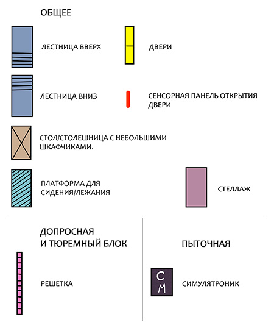
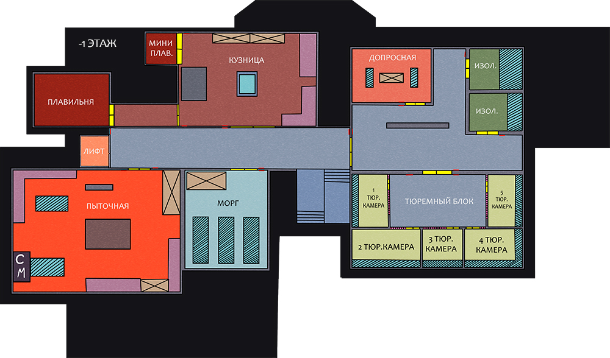

База: уровень -1
Цокольный этаж.
Страшные мрачные помещения. Настоящий рай для садистов, мазохистов или просто жаждущих тишины и покоя несчастных, особенно если они техники, медики или служители порядка.
 Уровень доступа: ограниченный (разрешение на посещение необходимо запрашивать у главного по станции).
Уровень доступа: ограниченный (разрешение на посещение необходимо запрашивать у главного по станции).
Страшные мрачные помещения. Настоящий рай для садистов, мазохистов или просто жаждущих тишины и покоя несчастных, особенно если они техники, медики или служители порядка.
Чтобы посмотреть местоположение объекта кликните на его название ниже:


Дополнительная информация доступна при клике на подсвеченный объект или иконку



 Для тех, кто уже задумался, как можно попасть в изолятор:
не забывайте и про наличие камер длительного содержания...
Для тех, кто уже задумался, как можно попасть в изолятор:
не забывайте и про наличие камер длительного содержания...
Критично!
Без острой надобности в ворота не стучать - опасно для жизни. И да, отваливающиеся детали - не уважительная причина.
Подзаряжайтесь вовремя!
Критично!
Ни в коем случае не злите техника, иначе не успеете даже пискнуть, как полетите в эту яму.
Для желающих все же удовлетворить свое любопытство - обращаться к представителям противоположной фракции.
Прежде чем замыслить что-то коварное, подумайте о том, что, возможно,
вам тоже придется задержаться в одном из этих отсеков (хотя когда это кого останавливало).

Допросная
Обычно здесь выясняют отношения. Правда в основном говорит кто-то один,
а второй всё пропускает мимо сенсоров и гордо молчит. Или активно спорит и попадает в изолятор.
Изоляторы
Здесь содержатся буйные обитатели станции и не в меру разговорчивые наглецы. Кузница
Обитель главного техника всея базы. Без острой надобности в ворота не стучать - опасно для жизни. И да, отваливающиеся детали - не уважительная причина.
Мини плавильня
Да, действительно "мини", но все же лучше сюда не соваться, чтобы потом не стоять под дверями кабинетов
на прием к медику, кузнецу и заодно психологу.
Морг
Сюда попадают те, кто злит техников, медиков, стражей порядка или просто не успевает вовремя
доползти до энергона и подзарядной платформы. Плавильня
Совсем большая плавильня. И очень жаркая. Ни в коем случае не злите техника, иначе не успеете даже пискнуть, как полетите в эту яму.
Пыточная
Понятия не имею, зачем это помещение на мирной базе. И проверять не хочу! Тюремный блок
Место для размышлений, куда - временно или надолго (как пойдет) - помещают
самых отъявленных негодяев. Или тех, кому просто надо отдохнуть, сбежав от повседневности.